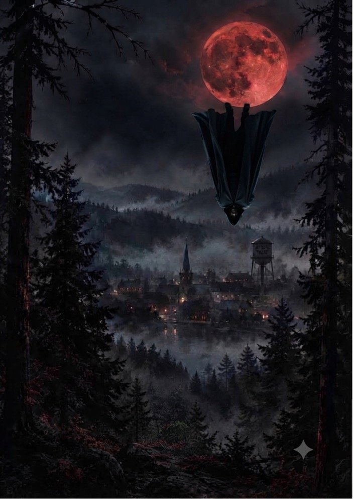
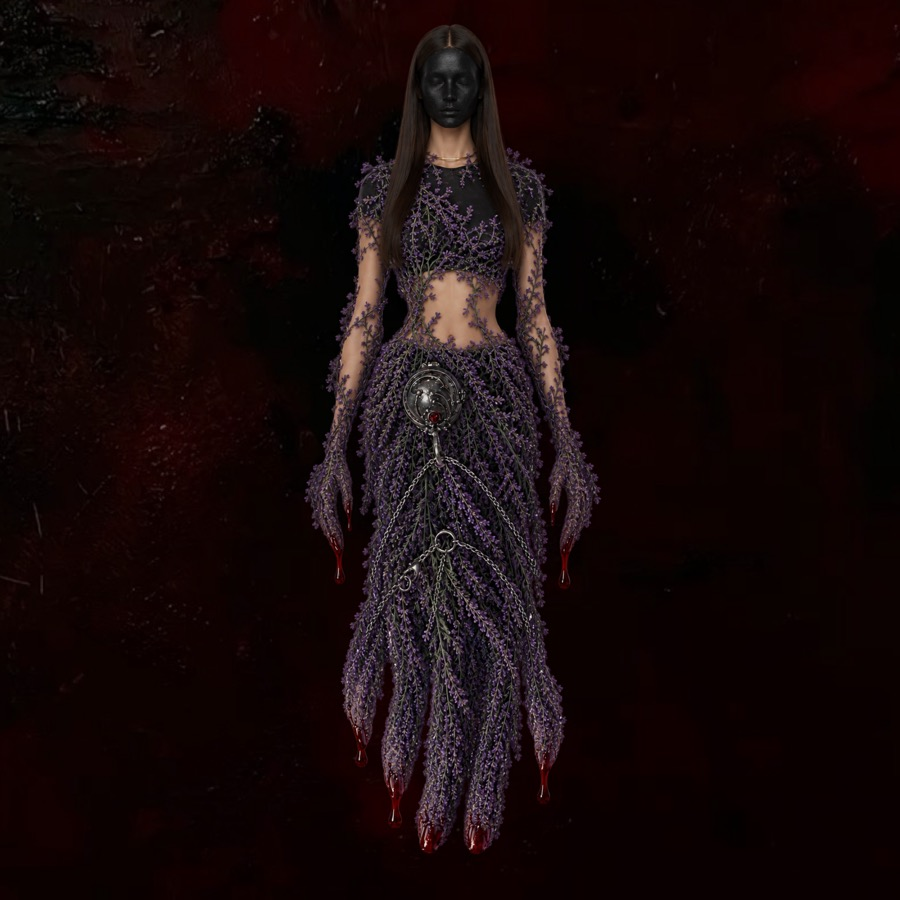
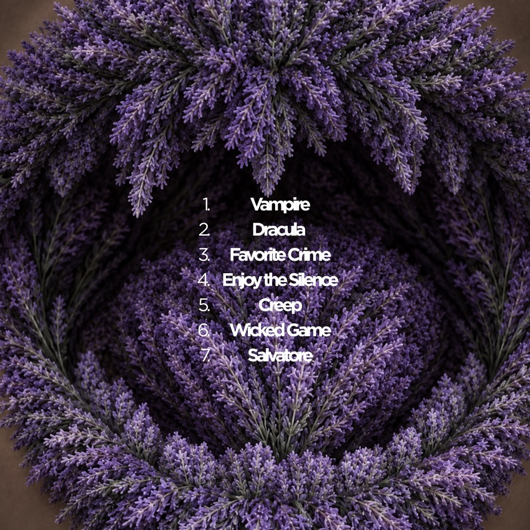
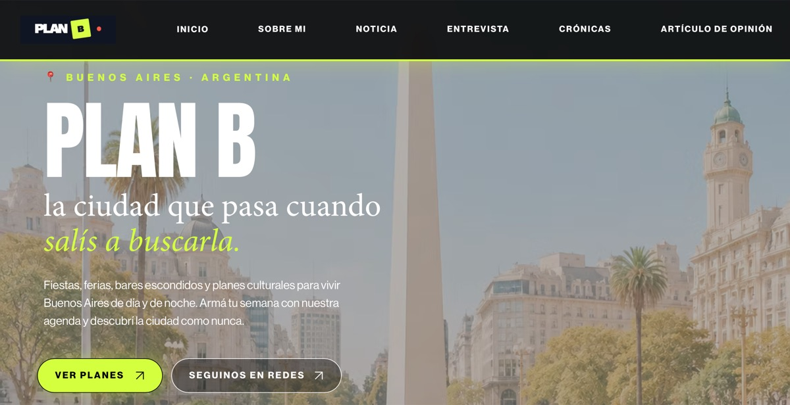
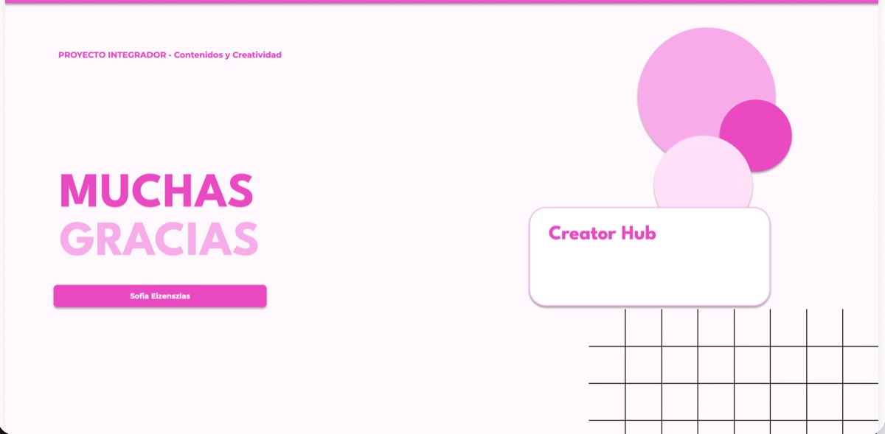
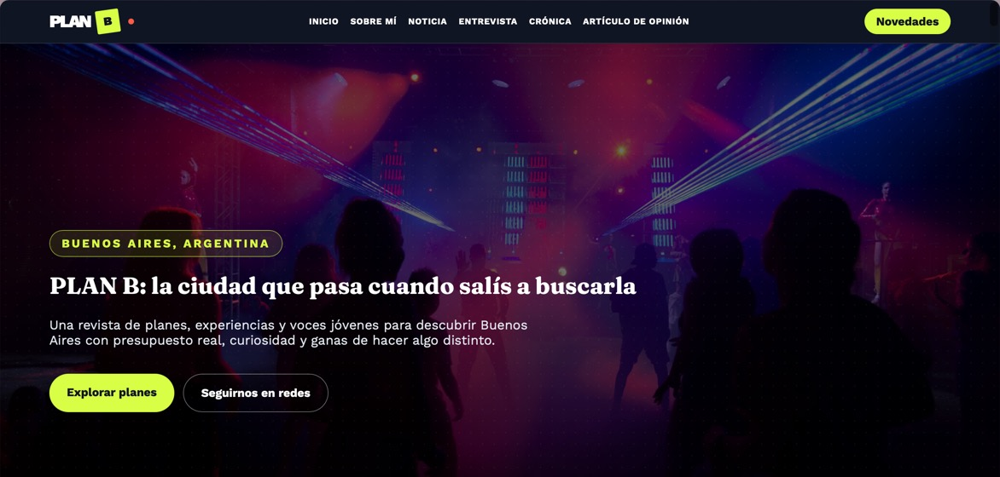

Portfolio 2026
Sofia
Eizenszlas
Estudiante · Comunicación Digital
Sobre mí como alumna
Me considero una alumna creativa, curiosa y con muchas ganas de aprender y seguir desarrollándome tanto en lo personal como en lo académico. Me gusta involucrarme en cada proyecto, explorar diferentes posibilidades y buscar nuevas formas de expresar mis ideas. Disfruto especialmente de los trabajos que me permiten experimentar, crear y salir de lo convencional, ya que considero que cada actividad es una oportunidad para descubrir nuevas habilidades y desarrollar mi propia identidad.
A lo largo de mi recorrido académico fui descubriendo la importancia de la creatividad, la observación y la capacidad de transformar una idea en algo concreto. Me interesa investigar, probar distintas herramientas, combinar recursos y encontrar soluciones originales a los desafíos que se presentan. No me gusta quedarme únicamente con lo básico, sino que intento aportar una mirada personal a cada trabajo, prestando atención a los detalles y a la manera en que cada elemento comunica algo.
Mis trabajos
Diseño visual

Tapa de libro - Comunicación Digital

Vinilo - Comunicación Digital

Contratapa de vinilo - Comunicación Digital
Diseño web

Plan B · Sitio web en Wix

Creator Hub · Presentación
